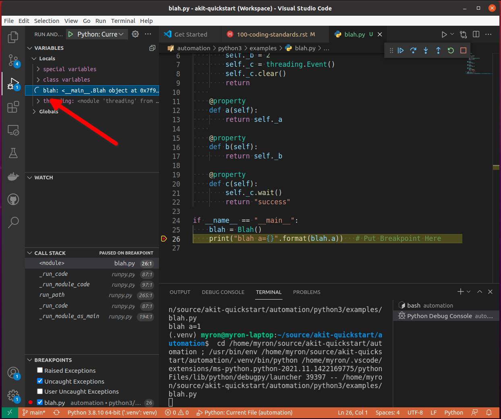

Coding Standards and Patterns
in-progress
Sections
Class Variable Initialization
All variables must be initialized in the constructor of the class.
class Blah:
def __init__(self):
self._a = 0
self._b = 0
self._c = ""
def set_to_blah(self):
self._c = "blahblah"
This is very important for visual debuggers and tools to perform type inferencing and popup context menues when typing and help. The tools will inspect the constructor to see what variables are attached to self. It also ensures that an initial value is present any time a variable is used. The following is NOT allowed:
class Blah:
def __init__(self):
self._a = 0
self._b = 0
def set_to_blah(self):
self._c = "blahblah"
Code Optimization
The desired characteristics of test code is different than that of production code. Test code is often used to debug or step through scenarios and workflows in order to capture information about what is going on in the code that is the target of the tests. Because test code is used so often in the debugger to perform investigations of product bugs and test issues, test code should only be optimized where there is sufficient data to show that a specific area of code is having a big negative impact on the performance of the test runs.
The reality of distributed automation frameworks is that they spend alot of time in interop APIs looping on retry attempts with delays intentionally inserted between retries. Code that is intentionally being delayed should NOT be the target of code optimizations. The following is a list of optimization techniques that are discouraged in the test code so the test code can exhibit more of the desired characteristics list above.
One Liners or Excessive Brevity
Nested Inlining Function Calls
Compound return statements
I cannot stress enough that if poor test coding styles are used too much in a large code base and if the practices go on for too long. The code will be difficult to work in and the productivity of the consumers of the test code will be greatly impacted.
One Liners and Brevity Shortcuts
One liners and code written with the intent of being brief are not allowed and or discourage in the automation code. This is because ensuring the automation code can be easily run and stepped through in the debugger is a primary requirement. Simple list comprehensions that get assigned to a local variable are ok such as:
dev_list = [ dev for dev in device_list ]
These are acceptable because you can easily see the result of the list comprehension in the debugger after the comprehension has run. However, if the list comprehension becomes more complexed with if statements calling functions, then you should break out the list creation into mutliple lines like so:
dev_list = []
for dev in device_list:
if dev.deviceType == 'network/upnp':
dev_list.append(dev)
This is most likely a little less performant. Squeezing every last bit of performance out of the code is NOT a priority of creating test code that is easy to consume, maintainable and easy to debug.
Nested Inlining Function Calls
An important aspect of code that is friendly to debug is that it spreads out statements across multiple lines of code. By spreading out code statement such as function calls or index accesses across mutliple lines, we attach metadata in the form of a line number to the statements which enables the debugger to work more efficiently with the statements.
The following code is not debugger friendly or efficient because the statements do not have unique line numbers associated with them in the python byte code.
some_function(param_function_a(), param_function_b(), param_function_c())
Another thing to keep in mind is that indexers in python are actually function calls so statements like the ones below are also undesired in test code.
some_function(data[0], data[1], data[2])
A better way to get data items from a sequence or list would be to expand the sequence to variables like so:
a, b, c = data
some_function(a, b, c)
Compound Return Statements
def some_function():
return inner_function_call(inner_a(), inner_b(), inner_c(), inner_d())
For more details about how returns should be written, see the Return Statements section.
Multiline Error Message Formation
An important part of creating great automation frameworks and tools is the sharing of expert knowledge between consumers of the automation framework code base. A great way to implement knowledge sharing is to write code so that it provides detailed contextual information when errors occur. This is important because the last person working or dealing with an issue in the error handling code is working on the problem and has the best knowledge about the context when the error occurs and should share that knowledge with others.
As part of providing well formed and detailed error reporting, we want to be able to see and debug the code that is creating the error messages. When creating multi-line error messages, the following method is preferred.
Create a list to hold the error message lines
Iterate any data collections or collect data and append lines to the list
Create section headers for individual data sections
Join the list of error message lines together using os.linesep.join() and assign the message to a variable so it can be seen in the debugger
pass the error message variable to the exception
The code below provides an example of the building of a detailed error message that is easy to debug.
err_msg_lines = [
"Failed to find expected UPNP devices after a timeout of {} seconds.".format(response_timeout)
]
err_msg_lines.append("EXPECTED: ({})".format( len(expected_devices) ))
for dkey in expected_devices:
err_msg_lines.append(" {}:".format(dkey))
err_msg_lines.append("")
err_msg_lines.append("MATCHING: ({})".format( len(scan_context.matching_devices) ))
for dkey in scan_context.matching_devices:
err_msg_lines.append(" {}:".format(dkey))
err_msg_lines.append("")
err_msg_lines.append("FOUND: ({})".format( len(scan_context.found_devices) ))
for dkey in scan_context.found_devices:
err_msg_lines.append(" {}:".format(dkey))
err_msg_lines.append("")
err_msg_lines.append("MISSING: ({})".format( len(missing) ))
for dkey in missing:
err_msg_lines.append(" {}:".format(dkey))
err_msg_lines.append("")
err_msg = os.linesep.join(err_msg_lines)
raise AKitTimeoutError(err_msg) from None
Stable Property Implementations
Alot of engineers like to do fancy things with properties and they often think that its ok to do whatever they want with properties and get as fancy as they want. The proper use of property is to provide controlled access to the data members of a class. The developement tools that we utilize, such as Visual Studo Code, are written with this implied behavioral contract in mind on how properties should behave.
The reality is that when we as developers break this implied contract on property behavior, we actually cause alot of problems for consumers of our code. That is because visual debuggers actually rely on this implied behavior in order to provide contextual information to the software engineer when they are running code in debug sessions. Look at the example code below.
class Blah:
def __init__(self):
self._a = 1
self._b = 2
return
def a(self):
return self._a
def b(self):
return self._b
def c(self):
val = self._a + self._b
return val
if __name__ == "__main__":
blah = Blah()
print("blah") # Put Breakpoint Here
When we run the code above in the debugger, we can see how the debugger responds to the code. By inserting a breakpoint after on the print(“blah”), we can pause in the debugger and see how the debugger utilized the properties that are on the instance of object Blah.

You can see from the image above that the debugger utilizes the implied contract with properties and that they are simple accessors to internal property data. The debugger runs the code in the property so it can show us a preview of the result. This is shown by the fact that the ‘c’ property is showing us the result of adding self._a + self._b and showing a value of 3 in the debugger variables view.
This example hints at something that developers writing python code need to rememeber. Python is a dynamic language. Debuggers for dynamic languages cannot make the same assumptions that a debugger might be able to make for a compiled language such as C or C++. Compiled languages store data in memory addresses and the variables get data directly from memory in those langauges. In python, objects can change dynamically and there is no way for the debugger to know from one statement to the next if a property on an object still exists. The debugger has to run the python code in a debug context in the python process so it can debug the code. It updates the debugger information by dynamically calling python properties and operators in order to resolve the values of the variables, objects and thier associated properties inside the debug execution context. This dynamic evaluation of python code in context is what make it possible to run commands in the interactive python console while debugging. From the debugger image above you see the debugger presents us with a single thread and callstack, but if we attach to the process in gdb we would see multiple threads.
(gdb) info threads
Id Target Id Frame
* 1 Thread 0x7f96d066c740 (LWP 51543) "python" futex_abstimed_wait_cancelable (private=0, abstime=0x0, clockid=0, expected=0, futex_word=0x1fd1250)
at ../sysdeps/nptl/futex-internal.h:320
2 Thread 0x7f96ceed0700 (LWP 51550) "python" 0x00007f96d0828618 in futex_abstimed_wait_cancelable (private=0, abstime=0x7f96ceecf110, clockid=0,
expected=0, futex_word=0x7f96c80018e0) at ../sysdeps/nptl/futex-internal.h:320
3 Thread 0x7f96ce6cf700 (LWP 51552) "python" __libc_recv (flags=<optimized out>, len=1024, buf=0x7f96c000e0c0, fd=3) at ../sysdeps/unix/sysv/linux/recv.c:28
4 Thread 0x7f96cdece700 (LWP 51554) "python" futex_abstimed_wait_cancelable (private=0, abstime=0x0, clockid=0, expected=0, futex_word=0x7f96c40011f0)
at ../sysdeps/nptl/futex-internal.h:320
5 Thread 0x7f96cd6cd700 (LWP 51555) "python" 0x00007f96d0828618 in futex_abstimed_wait_cancelable (private=0, abstime=0x7f96cd6cc110, clockid=0,
expected=0, futex_word=0x7f96b8001910) at ../sysdeps/nptl/futex-internal.h:320
6 Thread 0x7f96ccecc700 (LWP 51556) "python" 0x00007f96d0828618 in futex_abstimed_wait_cancelable (private=0, abstime=0x7f96ccecb000, clockid=0,
expected=0, futex_word=0x7f96bc001690) at ../sysdeps/nptl/futex-internal.h:32
In order to show what happens if we get too fancy with properties, lets modify the property code above so that it blocks on a synchronization primitive. We setup the c property to intentionally block on an event gate that is clear and never going to be set.
This demonstrates what will happen to our debug sessions if we attempt to get fancy and utilize a property for performing a complicated operation. The debugger locks up and our debug session becomes frozen. You can see this by looking at the image above. You can see that next to the blah object we get a spinner in the UI. If we attempt to step to the next statement, there is no response because the debugger is hung. Lets look at the stack trace of the thread that is hung in gdb.
(gdb) py-bt
Traceback (most recent call first):
File "/usr/lib/python3.8/threading.py", line 302, in wait
waiter.acquire()
File "/usr/lib/python3.8/threading.py", line 558, in wait
signaled = self._cond.wait(timeout)
File "/home/myron/source/akit-quickstart/automation/python3/examples/blah.py", line 21, in c
self._c.wait()
<built-in method getattr of module object at remote 0x7f96d008b0e0>
File "/home/myron/.vscode/extensions/ms-python.python-2021.11.1422169775/pythonFiles/lib/python/debugpy/_vendored/pydevd/_pydevd_bundle/pydevd_resolver.py", line 193, in _get_py_dictionary
attr = getattr(var, name)
File "/home/myron/.vscode/extensions/ms-python.python-2021.11.1422169775/pythonFiles/lib/python/debugpy/_vendored/pydevd/_pydevd_bundle/pydevd_resolver.py", line 74, in get_contents_debug_adapter_protocol
dct, used___dict__ = self._get_py_dictionary(obj)
File "/home/myron/.vscode/extensions/ms-python.python-2021.11.1422169775/pythonFiles/lib/python/debugpy/_vendored/pydevd/_pydevd_bundle/pydevd_suspended_frames.py", line 166, in get_children_variables
lst = resolver.get_contents_debug_adapter_protocol(self.value, fmt=fmt)
File "/home/myron/.vscode/extensions/ms-python.python-2021.11.1422169775/pythonFiles/lib/python/debugpy/_vendored/pydevd/_pydevd_bundle/pydevd_constants.py", line 513, in new_func
return func(*args, **kwargs)
File "/home/myron/.vscode/extensions/ms-python.python-2021.11.1422169775/pythonFiles/lib/python/debugpy/_vendored/pydevd/_pydevd_bundle/pydevd_comm.py", line 775, in internal_get_variable_json
for child_var in variable.get_children_variables(fmt=fmt, scope=scope):
File "/home/myron/.vscode/extensions/ms-python.python-2021.11.1422169775/pythonFiles/lib/python/debugpy/_vendored/pydevd/_pydevd_bundle/pydevd_constants.py", line 513, in new_func
return func(*args, **kwargs)
File "/home/myron/.vscode/extensions/ms-python.python-2021.11.1422169775/pythonFiles/lib/python/debugpy/_vendored/pydevd/_pydevd_bundle/pydevd_comm.py", line 542, in do_it
self.method(dbg, *self.args, **self.kwargs)
File "/home/myron/.vscode/extensions/ms-python.python-2021.11.1422169775/pythonFiles/lib/python/debugpy/_vendored/pydevd/pydevd.py", line 1715, in process_internal_commands
int_cmd.do_it(self)
File "/home/myron/.vscode/extensions/ms-python.python-2021.11.1422169775/pythonFiles/lib/python/debugpy/_vendored/pydevd/pydevd.py", line 2010, in _do_wait_suspend
self.process_internal_commands()
File "/home/myron/.vscode/extensions/ms-python.python-2021.11.1422169775/pythonFiles/lib/python/debugpy/_vendored/pydevd/pydevd.py", line 2744, in do_wait_suspend
File "/home/myron/.vscode/extensions/ms-python.python-2021.11.1422169775/pythonFiles/lib/python/debugpy/_vendored/pydevd/_pydevd_bundle/pydevd_frame.py", line 164, in do_wait_suspend
self._args[0].do_wait_suspend(*args, **kwargs)
File "/home/myron/.vscode/extensions/ms-python.python-2021.11.1422169775/pythonFiles/lib/python/debugpy/_vendored/pydevd/_pydevd_bundle/pydevd_frame.py", line 6321, in trace_dispatch
File "/home/myron/source/akit-quickstart/automation/python3/examples/blah.py", line 26, in <module>
print("blah a={}".format(blah.a)) # Put Breakpoint Here
<built-in method exec of module object at remote 0x7f96d008b0e0>
File "/usr/lib/python3.8/runpy.py", line 343, in _run_code
File "/usr/lib/python3.8/runpy.py", line 353, in _run_module_code
File "/usr/lib/python3.8/runpy.py", line 521, in run_path
File "/home/myron/.vscode/extensions/ms-python.python-2021.11.1422169775/pythonFiles/lib/python/debugpy/../debugpy/server/cli.py", line 285, in run_file
runpy.run_path(target_as_str, run_name=compat.force_str("__main__"))
File "/home/myron/.vscode/extensions/ms-python.python-2021.11.1422169775/pythonFiles/lib/python/debugpy/../debugpy/server/cli.py", line 1212, in main
File "/home/myron/.vscode/extensions/ms-python.python-2021.11.1422169775/pythonFiles/lib/python/debugpy/__main__.py", line 45, in <module>
cli.main()
<built-in method exec of module object at remote 0x7f96d008b0e0>
File "/usr/lib/python3.8/runpy.py", line 87, in _run_code
exec(code, run_globals)
File "/usr/lib/python3.8/runpy.py", line 194, in _run_module_as_main
return _run_code(code, main_globals, None,
What we can learn from this, is that its critical that our test code is debuggable and that we understand how the debugger is executing our code. In order to ensure that our test code can run in a stable fashion in the debugger, we need to respect the implied contract that properties on objects should only be performing simple calculations and internal object data access. With that said, here are some specific examples of code that I have encountered in properties that should be avoided.
Dont Run Commands Via SSH
def todo_add_example():
return
Dont Call Methods that Proxy Across Threads
def todo_add_example():
return
Return Statements
All functions or methods that are not generators should have a return statement. The return statements are important for four reasons:
It prevents the formation of appended functionality during a bad code merge
It provides line number data for the debugger
It provides a way to check results, in context, before a return
It makes code easier to read
Below is a detailed description of each of these issues.
Formation of Appended Functionality
One of the common tasks that is performed frequently by software developers is the refactoring or merging of code. During the process of refactoring or merging code, function declarations might be missed or incorrectly deleted. When this happens, new functionality can end up being inadvertantly appended to the previous function in the code. Take the following two functions as a simplified example.
def say_hello():
print("Hello")
def say_world():
print("World")
If returns are not present at the end of the functions above, then during a refactor or code merge, it is possible for lines of code to be removed, like if the say_world function declaration was deleted like so:
def say_hello():
print("Hello")
print("World")
Now, without warning from python, the functionality of the say_world function has been appended to the say_hello function and thus changes the functionality of the say_hello function without warning.
Now lets look at what would happen if the same thing took place when return statements are utilized as in the code below.
def say_hello():
print("Hello")
return
def say_world():
print("World")
return
In the code above, we clearly mark the end of our functions so python has a better chance of doing the correct thing when code is modified incorrectly. If the function declaration for say_world is removed like so.
def say_hello():
print("Hello")
return
print("World")
return
In the case above, python will not execute the dangling code and will not append its functionality to the say_hello method. Also, the python linter can show the remaining code body for say_world as dead code or unreachable code and complain when it tries to lint the code in the file.
Line Number for Debugging
A very important aspect of test code is debuggability. In order to be able to inspect the results of a function before it returns, you need a line of code to hang a breakpoint on. By stopping the debugger on the return statement, you can see the values of the inputs to the function and values of any intermediate byproducts or local variables in the context of the function.
import dis
def function_with_return(a: int, b: int):
if a + b == 99:
print ("Hello '99'")
return
def function_without_return(a: int, b: int):
if a + b == 99:
print ("Hello '99'")
print("==== FUNCTION WITH RETURN ====")
fwr_assem = dis.dis(function_with_return)
print(fwr_assem)
print("")
print("==== FUNCTION WITHOUT RETURN ====")
fwor_assem = dis.dis(function_without_return)
print(fwor_assem)
print("")
==== FUNCTION WITH RETURN ====
4 0 LOAD_FAST 0 (a)
2 LOAD_FAST 1 (b)
4 BINARY_ADD
6 LOAD_CONST 1 (99)
8 COMPARE_OP 2 (==)
10 POP_JUMP_IF_FALSE 20
5 12 LOAD_GLOBAL 0 (print)
14 LOAD_CONST 2 ("Hello '99'")
16 CALL_FUNCTION 1
18 POP_TOP
6 >> 20 LOAD_CONST 0 (None) # Has a Distict Line Number (6)
22 RETURN_VALUE
None
Distinct lines of code, which have an associated line number, are very important for enabling a great debugging experience. Without a distinct line of code or line number, there is no place to hang a breakpoint on a piece of code that is associated with the bytecode of a program.
==== FUNCTION WITHOUT RETURN ====
9 0 LOAD_FAST 0 (a)
2 LOAD_FAST 1 (b)
4 BINARY_ADD
6 LOAD_CONST 1 (99)
8 COMPARE_OP 2 (==)
10 POP_JUMP_IF_FALSE 20
10 12 LOAD_GLOBAL 0 (print)
14 LOAD_CONST 2 ("Hello '99'")
16 CALL_FUNCTION 1
18 POP_TOP
>> 20 LOAD_CONST 0 (None) # Has NO Line Number
22 RETURN_VALUE
None
In Context Return Verification
One of the most important aspects of writing debuggable code, is to write code in such a way that you can see the values of the local variables that contributed to the creation of the value being returned. The following is an example function that demonstrates the concept of writing functions so the context of the return value can be examined.
def example_function(a: int, b: int) -> int:
multiplier = random.randint(0, 10)
rtnval: int = (a + b) * multiplier
return rtnval
From looking at the simple example above, you can see that in order to debug the function and make sure it is returning the correct answer, it is useful to be able to see the multiplier parameter that is generated locally and is being used to effect the output. Providing a simple independant return allows us to see the context that is generating the output value. Another example below shows how a function like this might be written that will not provide the same ability to debug the function.
def example_function(a: int, b: int) -> int:
return (a + b) * random.randint(0, 10)
This function is sometimes valued by some developers for its brevity, but for testing purposes, this coding style results in reduced quality code. The reason the code is reduced quality is because you cannot see the context of the return value being generated. If you put a breakpoint on the return statement, you don’t see the resulting value until you step out into the calling function context. When you step out of the function to its calling function to see the return value, the local variables of the example_function and the context that generated the return value is no longer available. Upon the return of the function, the stack was popped and the context went away.
Because of the importance of examining the context that generates a returned value, it is always prefered to create a local variable in order to effect a simple return like so:
def example_function(a: int, b: int, c: int):
rtnval = (a + b) * c
return rtnval
Vise a complexed return statement such as
def example_function(a: int, b: int, c: int):
return (a + b) * c
Code Legibility
Finally, return statements are important to improve the legibility of code. Because python code uses indentation to determine scope, the repeated indentation of successive code blocks can present issues with the readability of code. This can particularly be a problem with longer functions. The example code below demonstates the improvement of ligibility that a return statement can offer.
def example_function(a: Optional[int], b: Optional[int], c: Optional[int], d: Optional[int]):
val = None
if a is not None:
print (a)
if b is not None:
print (a + b)
if c is not None:
print ((a + b) * c)
if d is not None:
print ((a + b) * c) + d
return
For the code above, it is clear where the end of the function resides as it has a return. This can be particularly important if this was a longer function.
For the function below, it might be a little more confusing where a function ends in a larger block of code.
def example_function(a: Optional[int], b: Optional[int], c: Optional[int], d: Optional[int]):
rtnval = None
if a is not None:
print (a)
if b is not None:
print (a + b)
if c is not None:
print ((a + b) * c)
if d is not None:
print ((a + b) * c) + d
For consistency and to help resolve all of these issues, It is prefered to use returns on all functions and methods. Any function or method that is not a generator, since generators don’t have returns.
InterOp and Persistance Decorators
Distributed automation scenarios engage in an aweful lot of interop activity. When your engaging in any type of interop activity, there can be problems with reliability. One of the major aspects of distrubuted testing is to place reliability expectations on the performance of interop APIS under both success and failure conditions. Let me highlight that, test framwork APIs must be useable by test code for both success and failure conditions. They must allow for the caller to pass valid and invalid data so the behavior of the remote enpoint can be tested under different conditions.
An experience Test Framework Architect is aware of this important aspect of test framework APIs that is much different from maybe a production API and will design the APIs accordingly.
One pattern that you might see in a production environment for APIs is the use of a @retry decorator on an API that might not have 100% reliability.
@retry(attempts=3)
def run_command(command):
status, stdout, stderr = self.ssh_agent.run_cmd(command)
return
This might work fine in a production environment where calling the API successfully is the main goal, but for test code, our main goal for interop APIs is not just to make a successful calls. We also have several competeing goals:
Check expected behavior (for success and failure)
Capture detailed data in failure contexts
Let tests and higher level code have control of behaviors and expectations
The use of retry decorations negatively impacts these goals. First of all, a @retry decoration always assumes a call should succeed. Good test framework code does not assume or make decisions for the code that is controlling the flow of a test. Flow control and error handling should be the responsibility of the higher level test code. Good test framework code lets the higher level code make expections on the behavior of the code under test in varying conditions. Good test framework code also allows the higher level code to make decisions about behavior under success and failure conditions so the higher level code can decide what to do based on the current context of the test.
Another problem with the use of the @retry decorator is the fact that it will not be capable of changing behavior based on use context as it is applied on module import and not at test runtime. The test code should be able to vary the parameters passed to test framework APIs and control the behavior and also how the API collects data.
Below is another example of the use of a persistance decorator that will negatively impact the ability of a test framework API to work with test code in order to test the interoperability of remote target code.
@reconnect_retry_method
def run_command(command):
status, stdout, stderr = self.ssh_agent.run_cmd(command)
return status, stdout, stderr
These uses of decorators don’t take into account the proper testing scenarios and limit diversity of behavior for the API. A better approach to design inter-operability APIs used by the Automation Kit is to allow the tests to pass parameters to the API to allow higher level code to change the behavior of the APIs.
The pattern that should be used is to tack on behavior modification parameters to the end of the inter-op APIs. Another important aspect of designing APIs and behavior parameters is to be consistent. An example of a behavior paremeter might be that on every API that modifies the remote state shared by devices should have a sync parameter to indicate the API should wait for a sync of shared state.
def add_member(name: str, sync: bool=True) -> int:
return id
def delete_member(id: int, sync: bool=True):
return
def get_members() -> List[str]:
return
def rename_member(id: int, new_name: str, old_name: str, sync: bool=True):
return
Note on the above API(s), the APIs that add, delete and modify data have a sync parameter and the APIs that do not modify state do not offer a sync behavior.
This sort of adding parameters can be a problem when you have lots of different ways you want to offer control over a set of interop API(s). You can quickly have a longer list of parameters that are needed to control the behavior of the lower level code. If you have 500 interop APIs in your test framework, this can lead to maintenance issues when adding new parameters. The Automation Kit deals with this nicely by have one Object parameter, that is used to contain the behavior modification parameters. Here is an example of a way to handle this that will scale nicely.
class Aspects:
"""
Aspects are utilized with the interop APIs and agents such as the :class:`SSHAgent` class in order
to modify the behavior of APIs with respect to retry parameter such as timeout, interval, looping patterns
logging, etc. The aspects object provides a way to package this common criteria into a single parameter
or constant you can pass to multiple APIs
"""
def __init__(self, action_pattern: ActionPattern = ActionPattern.SINGULAR, completion_timeout: float = DEFAULT_COMPLETION_TIMEOUT, completion_interval: float = DEFAULT_COMPLETION_INTERVAL,
inactivity_timeout: float = DEFAULT_INACTIVITY_TIMEOUT, inactivity_interval: float = DEFAULT_INACTIVITY_INTERVAL, monitor_delay: float = DEFAULT_MONITOR_DELAY,
logging_pattern: LoggingPattern = DEFAULT_LOGGING_PATTERN, logger: Optional["Logger"]=None):
"""
Creates an :class:`Aspects` package.
:param action_pattern: The :class:`ActionPattern` that the API should exhibit such as SINGULAR, DO_UNTIL_SUCCESS, DO_WHILE_SUCCESS
:param completion_timeout: The time in seconds as a float that is the max time before timeout for the activity to complete.
:param completion_interval: The time in seconds as a float that is waited before reattempting an activity.
:param inactivity_timeout: The time in seconds as a float that is the max time before timeout that is waited before a :class:`TimeoutError`
is raised due to inactivity.
:param inactivity_interval: The time in seconds as a float that is waited before reattempting an activity.
"""
self.action_pattern = action_pattern
self.completion_timeout = completion_timeout
self.completion_interval = completion_interval
self.inactivity_timeout = inactivity_timeout
self.inactivity_interval = inactivity_interval
self.monitor_delay = monitor_delay
self.logging_pattern = logging_pattern
if logger is None:
self.logger = getAutomatonKitLogger()
else:
self.logger = logger
return
So for the example APIs above, we might add a single behavior parameter to all of the APIs to offer the test code control of the behavior of the code making the remote interop REMOTE-API call. For example:
def add_member(name: str, sync: bool=True, aspects: Aspects=DEFAULT_ASPECTS) -> int:
return id
def delete_member(id: int, sync: bool=True, aspects: Aspects=DEFAULT_ASPECTS):
return
def get_members(aspects: Aspects=DEFAULT_ASPECTS) -> List[str]:
return
def rename_member(id: int, new_name: str, old_name: str, sync: bool=True, aspects: Aspects=DEFAULT_ASPECTS):
return
Now lets say we need to add a new parameter to all 500 of our interop APIs, we don’t need to modify any of the 500 API function signatures. To add the new behavior control, we modify the Aspects object and we modify the lower level remote interop REMOTE-API calling code. Our maintenance headache of modifying all 500 APIs to add a new behavior is eliminated.
This pattern scales well and very very very important aspects of how we write code is that it needs to be consumable, reliable and must be maintainable at scale.